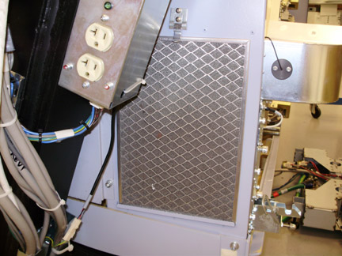

Operating Documentation
Direction 5193575-800, Rev# 5
LightSpeed 7.X Service Information - Adv
Operating Documentation |
| Required Persons | Preliminary Reqs | Procedure | Finalization |
|---|---|---|---|
| 1 | NA | 60 mins | NA |
This procedure defines the necessary steps to clean the Gantry and Detector plenum filters.
| Last Revised: | May 28, 2008 |
| Item | Qty | Effectivity | Part# | Manufacturer | |
|---|---|---|---|---|---|
| Hex wrenches (Field Supplied) | - | - | - | ||
| FE Torque Wrench set (for detector filter cleaning) | 1 | - | - | - | |
| HEPA vacuum (Field Supplied) | 1 | - | - | - | |
| Item | Qty | Effectivity | Part# | Manufacturer |
|---|---|---|---|---|
| Tywraps | AR | - | - | - |
| Shock Hazard | |
| Removing the detector plenum with power on can result in equipment damage or shock. | |
| Follow safety procedures in the applicable procedures when removing gantry covers and accessing the detector filter assembly. |
| Condition | Reference | Eff |
|---|---|---|
This procedure assumes the gantry side top and front covers have been already removed allowing access to the Detector assembly. | - | - |
This procedure assumes the gantry side covers have already been removed allowing access to the gantry filter. | - | - |
Refer to VCT DAS and Detector Fan, Fan Plate Assembly Replacement for instructions on removing the fan plate to access the filter assembly. With the fan plate off, the filter is exposed for cleaning.
Using the field HEPA vacuum, clean the filter through the opening in the plenum behind the fan plate. Be careful around the plenum thermistors. See Illustration 1 showing the thermistors, cabling and grillwork covering the filter to be cleaned.
| NOTE: | The grill is there to provide stiffness to the filter assembly and to make sure the EMC mesh on the back of the filter is not damaged during cleaning. |
Illustration 1: Plenum Filter and Thermistors

Reinstall the fan plate and connections per the VCT Detector Fan, Fan Plate Assembly Replacement instructions. Perform the fan checks defined in that procedure.
Initially vacuum the gantry filter in place to avoid shaking loose dust and debris.
Illustration 2: Gantry FIlter on Gantry left

Remove the gantry filter and vacuum from the front to pull dust and debris out of the filter. (vacuuming from back first may pull dust deeper into filter making it harder to remove)
Vacuum the back after cleaning the front to remove any dust that penetrated the filter.
No finalization steps necessary for the detector plenum filter.
No finalization steps necessary for gantry filter.